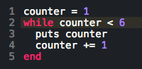
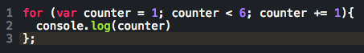

input:output
Welcome to the blog!
Welcome to the blog!
Looping is one of the fundamental abilities of a programming language. Computers are really good at repeating themselves, and there are a lot of ways to get complicated tasks done quickly by looping. It has been interesting to notice the different ways looping gets done in Ruby and JavaScript. In order to use these languages to their fullest potential you have to be able to loop.
I find looping in Ruby reads a bit more clearly than in JavaScript, but you can decide for yourself after looking at some examples.
I will show two ways to print the numbers 1 through 5, first in Ruby, then in JavaScript. In Ruby, "while" loops are an intuitive way to repeat operations. As you can see below, I defined an incrementer, "counter", and then asked the computer to put the value of counter on the screen, and then increase the value of the counter by one. The computer will repeat this task while the value of the counter is less than 6. The result is the computer printing the numbers 1 through 5.

The equivalent of the while loop in JavaScript is the "for" loop. As you can see, the syntax is slightly more complicated and involves defining the counter, the limiting factor, and the incrementation value in the first set of parenthesis. The operation is then passed inside the curly brackets.

This foundational problem solving tool is a good vehicle to illustrate some of the differences between these two languages. There are other ways to loop in both of these languages, but I find myself using these methods the most. I hope this helps you navigate the intricacies of these two languages.